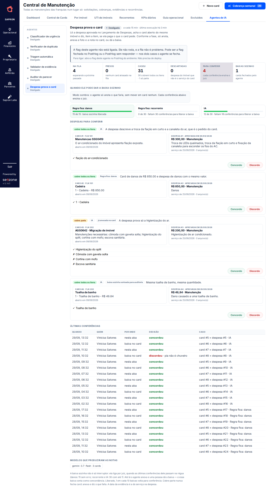

Bot Despesa → Card de Manutenção
Brainstorm do desenho · Central de Manutenção + Lançamento de Despesas
v0.2 · 29/09/2026 · situação: construído, em revisão. Os PRs estão abertos para a develop: backend #4986 e front #3599. O agente nasce desligado · dono: Vinicius Satores (Manutenção)
🎯 1. O que o bot resolve
A franquia lança a despesa do serviço no Sapron e ela é aprovada no financeiro. O card de manutenção do mesmo serviço continua aberto, esperando uma foto que já está na despesa. O bot liga as duas pontas: quando a despesa é aprovada e bate com um card aberto, ele puxa a evidência da despesa para o card e dá a baixa.
📊 2. O tamanho do problema
Fonte: API de produção do Sapron, 28/09/2026 às 20h37. A leitura não alterou nenhum dado. Entraram os cards abertos e as despesas registradas de 01 a 28/09.
Comparar palavra não basta. Dos 187 cards, a maioria tem só despesa sem relação com o card (água, energia, vassoura, condomínio). A regra simples de palavra erra para os dois lados: casa despesa errada e perde a certa. Por isso o bot precisa de um juiz, detalhado na seção 4.
2.1 Antes × depois — o que dá para afirmar hoje
Volume elegível (hoje, 26/10/2026): 1.095 cards abertos no Sapron (status NOT IN ('concluido','cancelada')). Tirando os 419 de origin='recorrente' — esses já fecham sozinhos pelo matcher de recorrência que já existe em produção — sobram 676 cards que esse bot novo mira, dos quais 197 são de Danos (o alvo mais limpo, por casar valor sem IA).
"Quantos o bot baixa por mês" não dá para responder com precisão antes de ele rodar. A ligação despesa↔card não é um campo gravado —
financial_expensesnão temcard_id(folha de contexto, seção 5). A varredura mais confiável já feita (property_id + janela −30/+7 dias, testada em toda a base, não só Danos) achou candidato para 16,6% das despesas (1.492 de 9.003), e 29% desses (429) são ambíguos — medição de 08/09/2026. Esse é o teto de confiabilidade do pareamento por imóvel, não a taxa de acerto do bot. O número real de baixas por mês só existe depois da Fase 1 (sombra), quando o juiz da seção 4 roda contra casos reais e a régua da seção 7.2 começa a contar conferências.Tempo economizado por semana: não há no card nem na despesa um campo de tempo de conferência manual (lessons.md / folha de contexto: tempo por etapa do card não é calculável, só contagem). Em vez de estimar sem base, esse número entra como meta de medição da Fase 1: comparar o tempo entre "despesa aprovada" e "card baixado" nos casos que o bot sinalizar, contra a mesma distância nos casos de hoje feitos à mão.
🔍 3. O que já existe no sistema
| Peça | Situação |
|---|---|
| Ligação entre card e despesa | não existe Nenhum campo liga uma à outra |
| Arquivos da despesa | existe A despesa guarda a foto do serviço e a nota ou recibo |
| Enviar evidência no card | existe É o mesmo caminho que a franquia usa hoje, e leva o card para "Aguardando aprovação" |
| Dar baixa no card | existe É o mesmo botão de aprovar da Central |
| Casar despesa com manutenção | em parte A recorrente do ar-condicionado já faz isso com os itens 298 e 405 e com palavra-chave. Os cards comuns não têm nada |
| Validador de evidência (IA) | em produção Lê a foto e diz se ela cobre todos os itens do card |
🔄 4. Como o bot funciona
- Acorda a cada 15 minutos e procura as despesas que acabaram de ser aprovadas ou pagas. Segue o esquema dos outros agentes da Central, e o código do financeiro fica como está.
- Procura os cards candidatos: abertos, do mesmo imóvel e abertos antes da data da despesa, com 2 dias de folga. Despesa de conta (água, luz, condomínio, internet) e de reserva nem entra.
- O juiz decide se bate, com três caminhos:
- Danos: o card já traz o item e o valor ("Cadeira R$ 850"). Item e valor iguais casam sem IA.
- Recorrente: usa os itens da regra, como o sistema já faz.
- Resto: a IA lê o card e a despesa e responde se a despesa cobre todos os itens, só parte ou nenhum.
- Age conforme a resposta (seção 5).
- Registra tudo: qual despesa, qual card, por que casou e quem decidiu (a regra ou a IA).
✅ 5. O que o bot faz em cada caso
| O juiz disse | O bot faz | Como o card fica |
|---|---|---|
| cobre todos os itens | Posta no chamado do card as fotos e a nota da despesa, sem copiar o arquivo. Grava a ligação e a etiqueta despesa:<número> | Baixa dada, com a data da despesa como data da evidência |
| cobre só parte | Anexa a evidência e escreve no card quais itens faltam | Continua aberto |
| em dúvida | Só registra, para a gente olhar depois | Não muda |
| despesa cancelada depois | Avisa internamente. Não reabre sozinho | Uma pessoa decide |
Por que a data da despesa: o score da franquia conta os dias até a evidência. Com a data em que o bot rodou, a demora da aprovação no financeiro contaria contra ela.
🧪 6. Casos reais do dia 28/09
| Caso | O que a regra de palavra fez | O que o bot tem de fazer |
|---|---|---|
| Card "Cadeira R$ 850" (Danos) e despesa descrita só como "Danos" | perdeu | Casar por item e valor |
| Dois cards de toalha (de banho e de rosto) e uma despesa de toalha de banho | casou os dois | Casar só o de banho, ou os dois se a despesa listar os dois itens |
| Card com 3 itens (chuveiro, pia, tomada) e despesa só da pia | não viu | Anexar e dizer que faltam chuveiro e tomada |
| Card de ar-condicionado e despesa "Higienização de ar condicionado" | acertou | Dar baixa |
| Card de infiltração e despesas de água e energia | ignorou | Ignorar, porque despesa de conta nem entra |
🛡️ 7. Sistema de aprovação
A ideia é conferir no começo, para o agente aprender, e deixar de conferir quando ele provar que acerta.
7.1 Três fases, uma de cada vez
| Fase | O que o agente faz | O que a pessoa faz |
|---|---|---|
| 1 · Sombra | Só anota o que faria. Não mexe em card nenhum | Diz "concordo" ou "discordo" na aba Agentes de IA |
| 2 · Anexar | Põe a foto e a nota da despesa no card. Se a despesa cobre todos os itens, o card vai para "Aguardando aprovação" | Dá a baixa normal na Central. Essa baixa já conta como "concordo" |
| 3 · Baixa | Fecha sozinho o card coberto por inteiro, mas só no tipo de caso que passou na régua | Confere só as baixas sorteadas para auditoria |
Cada fase tem uma chave própria, e todas nascem fechadas. Todos os tipos de caso passam pela sombra.
7.2 A régua é separada por tipo de caso
| Tipo de caso | Como decide | Libera a baixa sozinha com |
|---|---|---|
| Danos | O valor total do card é igual ao da despesa. É conta, sem IA | 15 conferências sem nenhum erro |
| Recorrente | A despesa foi lançada no item da regra, sem IA | 30 conferências com até 1 erro |
| IA | A IA lê o card e a despesa item a item | 30 conferências com até 1 erro (97% = 1 erro em 30 conferências) |
A régua olha sempre as últimas conferências. Se o erro passar do limite, o tipo perde a baixa sozinha e volta a só anexar.
7.3 Conferir quase sem clique
- Baixa no card que o agente anexou conta como "concordo".
- Devolver a evidência desse card conta como "discordo".
- Na aba: os botões Concordo e Discordo. O Discordo pede o motivo.
7.4 Como o agente aprende
O motivo de cada "discordo" volta para a IA como exemplo na leitura seguinte. Um motivo como "pia não é chuveiro" ensina mais do que um "discordo" sem explicação.
7.5 Auditoria depois de liberar
Depois que um tipo ganha a baixa sozinha, 1 em cada 10 dessas baixas é sorteada e volta para a conferência. Sem isso, o tipo liberado nunca mais seria medido. Um "discordo" numa baixa sorteada entra na mesma régua.
7.6 Quem confere, e o registro
Qualquer pessoa que opera a Central pode conferir. Fica gravado quem, quando, por onde (aba, baixa no card ou devolução) e o motivo. A aba mostra as últimas 20 conferências.
7.7 O que nunca muda
- Despesa que cobre só parte nunca fecha o card: o agente anexa e escreve o que falta.
- Na dúvida, não fecha.
- A data da evidência é a do serviço na despesa, nunca antes da abertura do card.
- Despesa cancelada depois gera só um aviso interno. O agente não reabre o card sozinho.
7.8 Protocolo de rollback
Se o agente der baixa num card errado (casou despesa que não era daquele serviço), a Manutenção reabre o card em até 1 dia útil, mediante qualquer um dos dois gatilhos:
- Contestação da franquia — ela reabre pedindo revisão, igual hoje.
- Achado na auditoria amostral (seção 7.5) — a baixa sorteada que vier com "discordo" já dispara a reabertura, sem esperar a franquia reclamar.
Reabrir tira a etiqueta despesa:<número>, devolve o card para o status anterior à baixa e registra o motivo — o mesmo campo de "discordo" da seção 7.3. Enquanto a Fase 3 (baixa) não provar a régua, isso é raro; vira rotina de auditoria, não exceção.

✅ 8. Decisões tomadas
| # | Pergunta | Decisão |
|---|---|---|
| 1 | Baixa sozinha desde o começo? | Não. Começa com aprovação de gente e libera a baixa pela régua (Vinicius, 29/09) |
| 2 | Uma despesa pode provar mais de um card? | Sim, desde que a IA diga qual item cobre cada card |
| 3 | Despesa "Pré-aprovada" conta? | Não. Só "Aprovada" e "Paga" |
| 4 | Régua | Danos: 15 sem erro. Recorrente e IA: 30 com até 1 erro |
| 5 | Danos pode pular a sombra? | Não. Todos os tipos passam pela sombra |
| 6 | Auditoria depois de liberar? | Sim, 1 em cada 10 baixas |
| 7 | Quem confere? | Qualquer pessoa que opera a Central, com registro de quem, quando e por onde (Vinicius, 29/09) |
🚀 9. Próximos passos
- O Alfred revisa, e os PRs entram na
develop. Depois seguem parastagingemain - Criar a chave
AI_HUB_API_KEY_MAINTENANCE_EXPENSEem staging e em produção (o Vinicius roda) - Criar as 3 chaves das fases no PostHog, todas fechadas
- Abrir a primeira fase: 1 a 2 semanas em sombra, conferindo pela aba
- Abrir a fase de anexar. As baixas na Central seguem ensinando o agente
- Abrir a fase de baixa. Cada tipo libera sozinho quando passar na régua